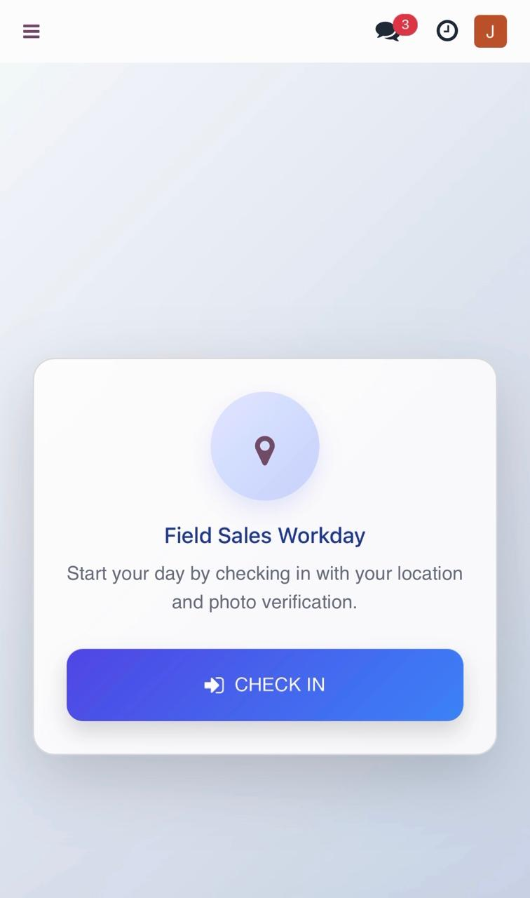
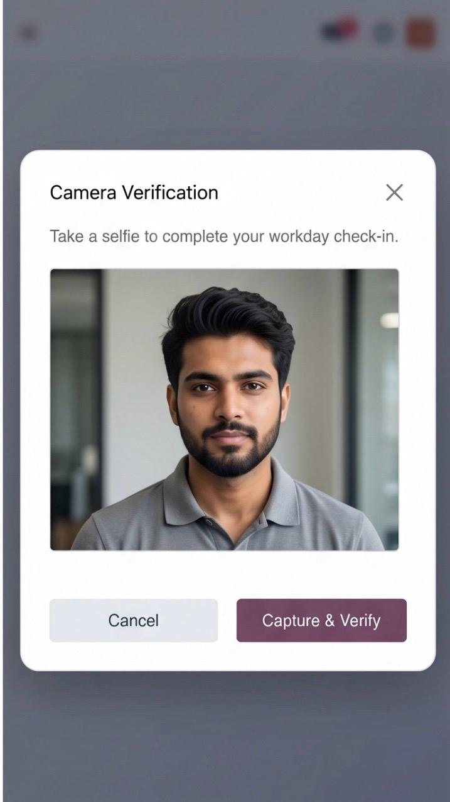
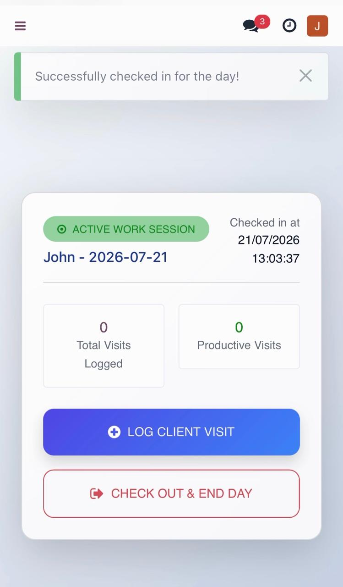
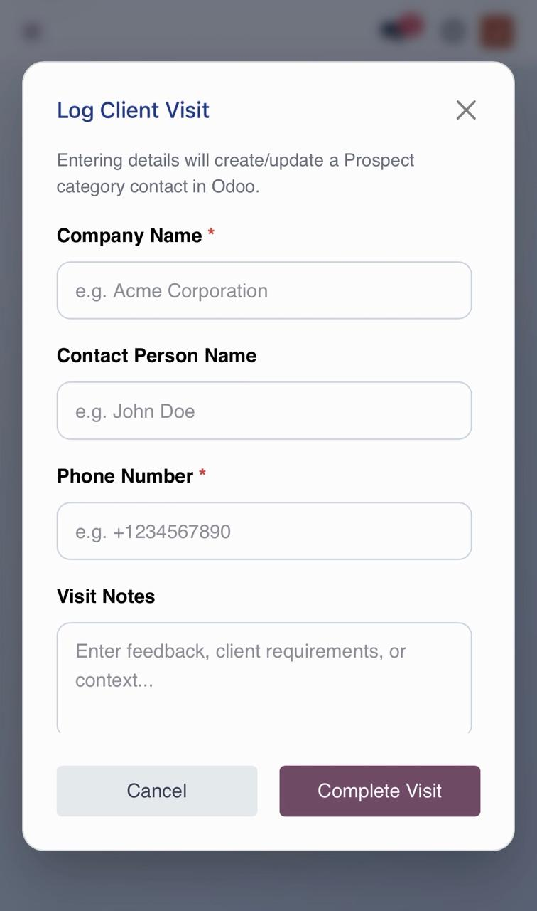
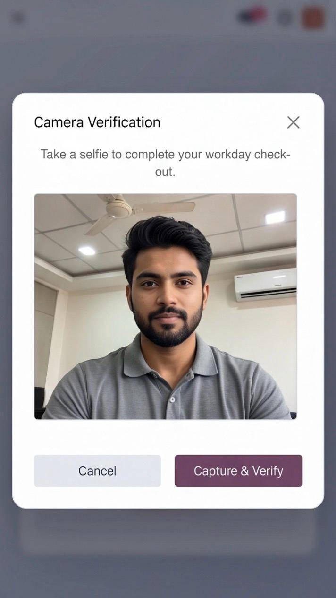
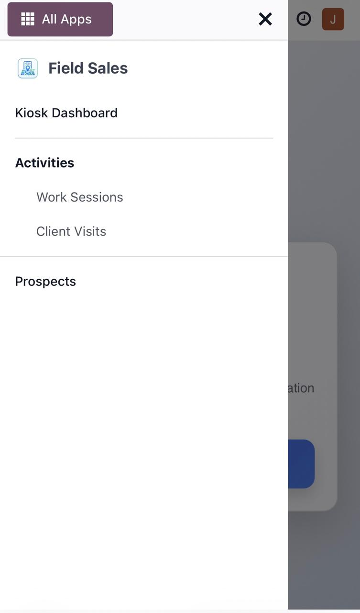
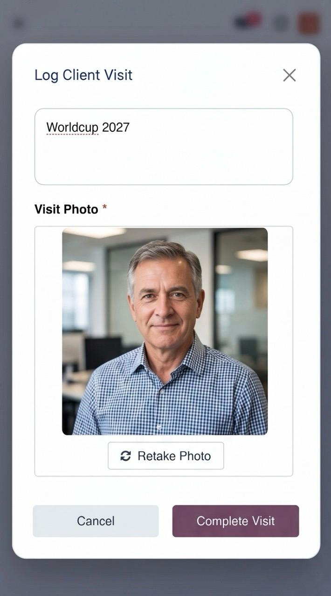
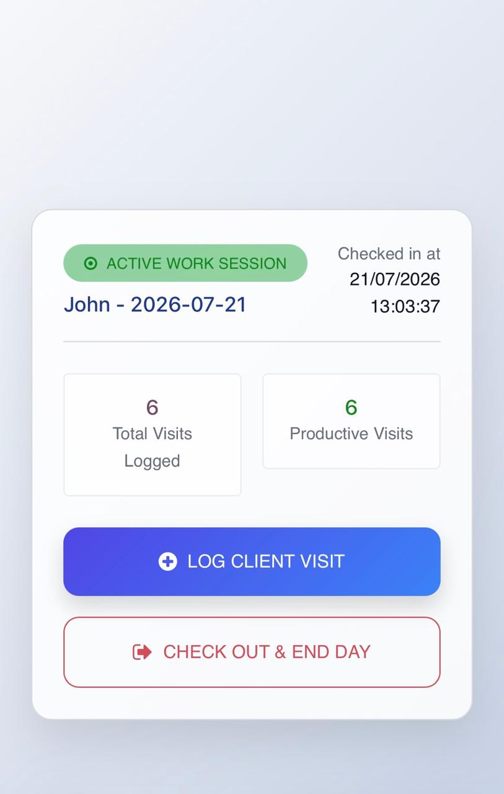
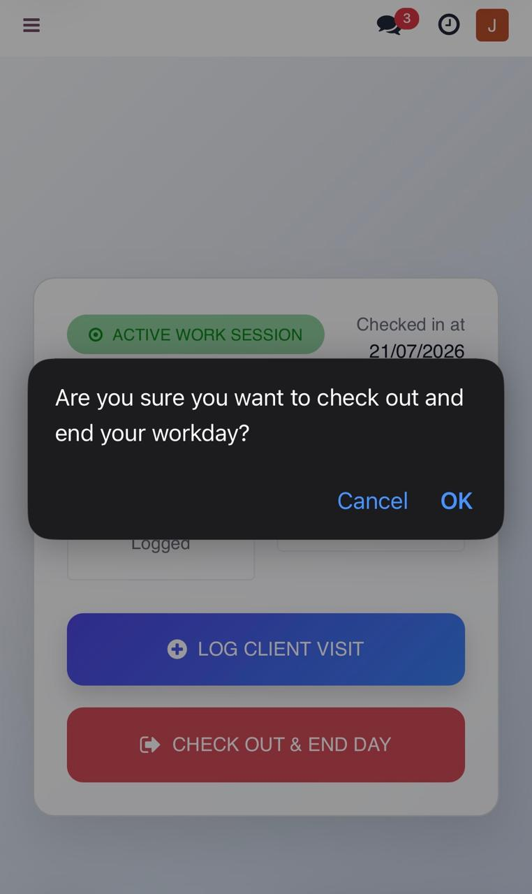

Field Sales Activity & Tracking
Know exactly where your field reps went, who they met, and what came back — with selfie check-in, GPS-verified visits, live route maps and automatic lead capture inside Odoo.

base + webYou are paying for a field team you cannot see
Attendance sheets, end-of-day phone calls and a WhatsApp group are not proof. This module turns every shift into a verifiable, timestamped, geolocated record — inside Odoo, with no third-party service.
- Reps report their own hours — nobody can verify them.
- Visits live in notebooks and never reach the CRM.
- No way to prove a rep was actually at the client’s door.
- Managers rebuild the day manually every evening.
- Shift opens only after a selfie and a GPS lock.
- Every visit creates or updates a tagged contact automatically.
- A storefront photo is mandatory before a visit can be saved.
- The full route replays on a map, and the PDF writes itself.
Five taps, start to finish
The rep only ever sees one screen. Everything below is a real screenshot of the kiosk running on a phone.

Open the kiosk and hit Check In
The rep signs into Odoo on their own phone and lands straight on Field Sales → Kiosk Dashboard. One full-width button, no menus to learn, no separate app to install. The same screen adapts to a tablet or a desktop.
Selfie plus GPS lock — or no shift
The camera opens in the browser and the rep takes a verification selfie. At the same moment the module captures HTML5 geolocation and stores latitude, longitude and the accuracy radius to seven decimal places.
The session cannot open without both. The selfie is saved as an Odoo attachment on the session record.


The shift is live
An Active Work Session badge, the exact check-in timestamp, and two counters that tick up all day: total visits logged and productive visits. From here the rep has exactly two choices — log a visit, or end the day.
Log the visit, capture the proof
Company name, contact person, phone and free-text notes — four fields, built for someone standing on a pavement. A storefront or client photo is required before the visit can be completed, which is what stops a visit being logged from the sofa.
On save the module writes the GPS fix, builds a Google Maps link, and creates or updates a
res.partner
tagged Field Lead.


Check out — and the day audits itself
A confirmation prompt, a second selfie, a second GPS fix. The session closes as Completed.
Odoo then measures the Haversine distance between the check-in and check-out points. Within 200 metres the session is stamped Same Location; beyond it, Location Changed — so a manager can spot the outliers without reading a single coordinate.
Every screen your team will ever touch
No native app, no app-store approval, no device enrolment. It is the Odoo web client on a phone browser.




Replay the whole day on a map
While a shift is open the kiosk drops a GPS ping every 15 minutes. Check-in, check-out and each client visit are logged as their own event type, then drawn as a single connected trajectory on an interactive Leaflet map built right into the session form.

One record per shift, with the evidence attached
Standard Odoo list and form views — searchable, filterable, groupable, exportable. Nothing exotic to learn.

Everything about one shift, on one form
Both verification selfies. Both timestamps. Both coordinate pairs, each with a clickable View on Google Maps link. And the computed Location Verification badge sitting right underneath them.
Three tabs finish the record: Client Visits for every meeting of that shift — company, contact, phone, in and out times, duration in minutes, linked lead — plus Route Logs holding every stored coordinate with its timestamp and event type, and Route Map drawing them.
It is an ordinary Odoo form, so it filters, groups, exports and prints like everything else in your database.


What you get on install
Mobile kiosk dashboard
A dedicated full-screen client action for reps. Large touch targets, no nested menus, works in any modern phone browser.
Selfie verification
Camera capture on check-in and check-out, stored as Odoo attachments on the session so they never bloat the database rows.
Precise geolocation
HTML5 coordinates stored at seven decimal places, with the reported accuracy radius saved alongside every client visit.
Interactive route map
Leaflet map embedded in the session form, drawing the connected trajectory with a clickable marker for each client visit.
Background tracking
While the shift is open the kiosk records an interval ping every 15 minutes, filling in the gaps between logged visits.
Location verification
A Haversine calculation compares the two endpoints and flags Same Location or Location Changed at a 200 m tolerance.
Automatic lead capture
Each visit creates or updates a res.partner, tags it Field Lead and sets an is_field_lead flag for filtering.
Session metrics
Total visits and productive visits are stored computed fields, so you can group, filter and report on them like any native Odoo metric.
Daily activity PDF
A QWeb report bound to the session — print Daily Activity Report straight from the form or from a multi-record selection.
The same kiosk on a laptop or a shared tablet
One responsive client action, not a separate mobile build — useful for a reception desk, a depot terminal, or a rep who works from a laptop between site visits.
Identical visit logger, wherever it opens
Same fields, same required photo, same GPS capture — the modal simply reflows for the wider viewport. A rep can start a shift on a depot terminal and log visits from a phone on the same session.
Camera and geolocation come from the browser’s own HTML5 APIs, so any current Chrome, Safari, Firefox or Edge works without a plugin.
Technical specification
Running in three minutes
Drop in the addon
Copy the field_sales folder into your addons path and update the apps list.
Install and assign
Install Field Sales Activity & Tracking, then give each user either the Representative or Manager privilege.
Send them the link
Reps open Odoo on their phone and go to Field Sales → Kiosk Dashboard. There is nothing else to configure.
Straight answers
No. It is the Odoo web client in a phone browser. No app store, no device enrolment, no MDM.
No. Pings are recorded only while a session is checked in, and they stop the moment the rep checks out.
Not for the route map — that is Leaflet with OpenStreetMap tiles. Coordinates also render as plain Google Maps links you can open in one click, no key needed.
Yes. It depends on base and web only, so no Enterprise app is required.
In Contacts, tagged Field Lead, reachable from the Prospects menu. Existing contacts are matched on phone or mobile number and updated rather than duplicated.
No. Unlink is granted to managers only, so the audit trail stays intact.
Stop taking your field team’s word for it
Install once, hand your reps a link, and every shift from tomorrow onwards arrives in Odoo already verified, already mapped and already turned into leads.